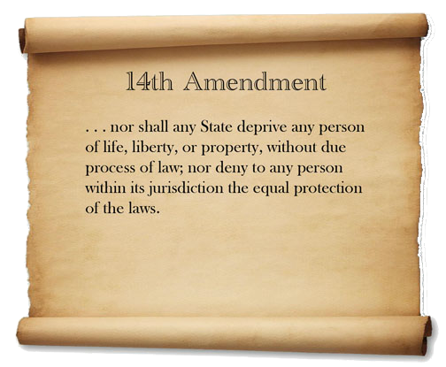
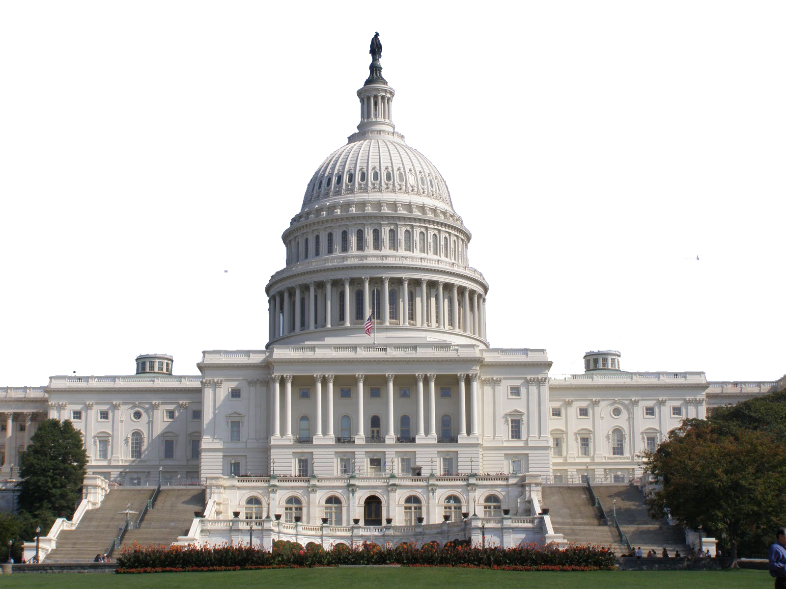

When using ChatGPT, various advantages and disadvantages emerge from a privacy standpoint. Users might value the personal control that ChatGPT allows them in protecting their personal searches and also providing encrypted and secure interactions between users and AI. On the flip side, concerns also may arise among users regarding the storage and utilization of their personal data, especially if there is minimal transparency. Furthermore, the storage of sensitive information poses a potential hazard, increasing the risk of data breaches.
Governments can establish clear regulations to ensure the ethical development and usage of ChatGPT and making of ethical guidelines can minimize potential risks to national security, ensuring responsible use of AI technologies
Cons : An overreach and surveillance or monitoring purposes may cause damage on citizens' privacy rights. Slow adaptation of regulations or even slow laws getting passed may lead to a delay in addressing new ethical concerns which potentially allowing misuse of the technology by the wrong people
